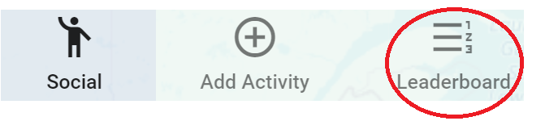
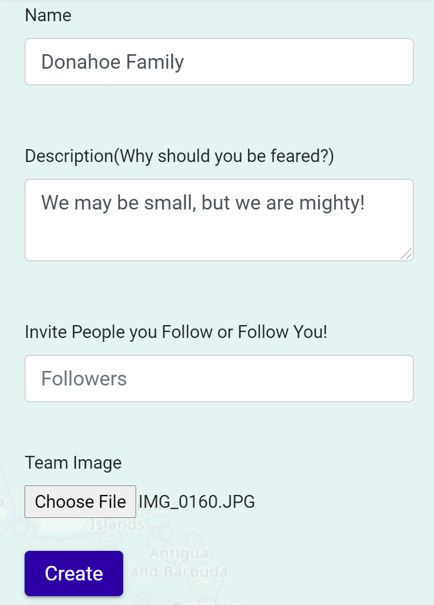

<div >
	<mat-vertical-stepper [linear]="true" #stepper>
  <mat-step [stepControl]>
    <form [formGroup]>
      <ng-template matStepLabel>Navigate to the leaderboard tab on the map menu</ng-template>
      The menu on the left of the map page has a leaderboard tab that allows you to see all users.<br>
      
    </form>
  </mat-step>

  <mat-step [stepControl]>
    <form [formGroup]>
      <ng-template matStepLabel>Follow your future teammates</ng-template>
      Follow the individuals who you would like to team with by pressing the "Follow" button<br>
      

    </form>
  </mat-step>

  <mat-step>
    <ng-template matStepLabel>Navigate to the teams tab on the map menu</ng-template>
    The menu on the left of the map page has a teams tab.
    <br>
      <br>
     To create a team, press 
    

  </mat-step>

  <mat-step>
    <ng-template matStepLabel>Create your team!</ng-template>
    Fill out your information about your team, and don't forget to invite the people you followed. Once you add them, they'll get notifications on their accounts.
    <br>
         

  </mat-step>
</mat-vertical-stepper>

</div>
